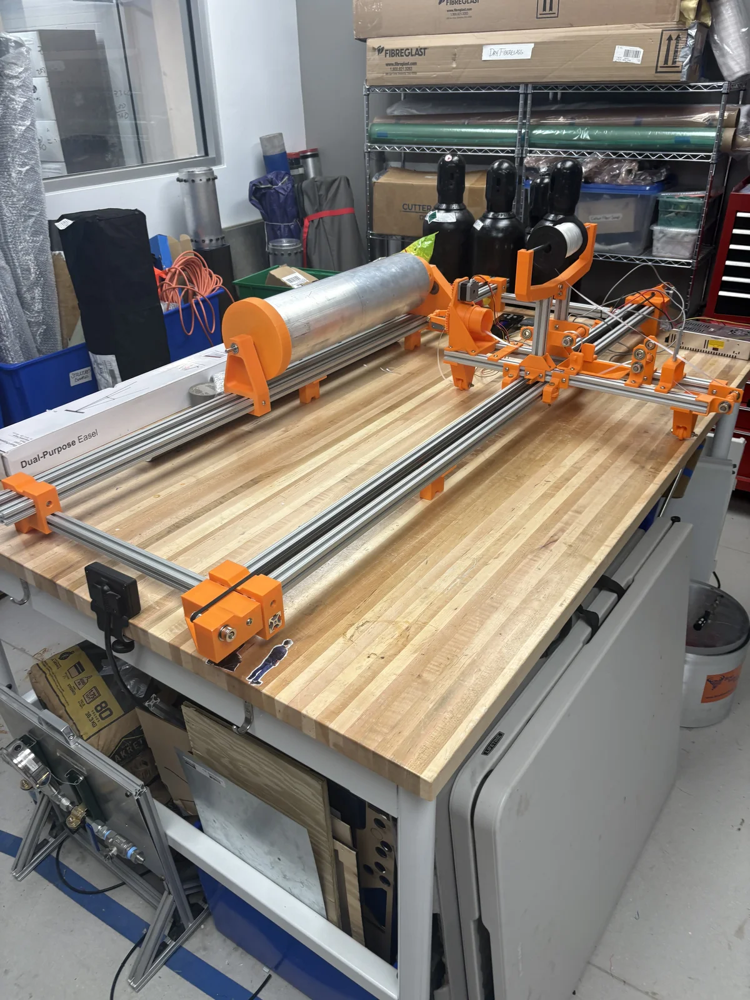
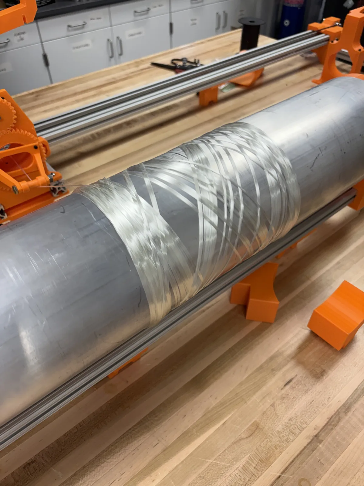
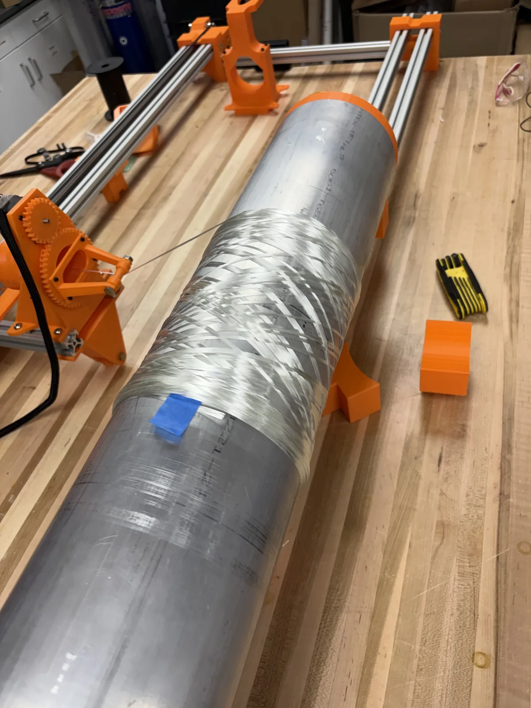
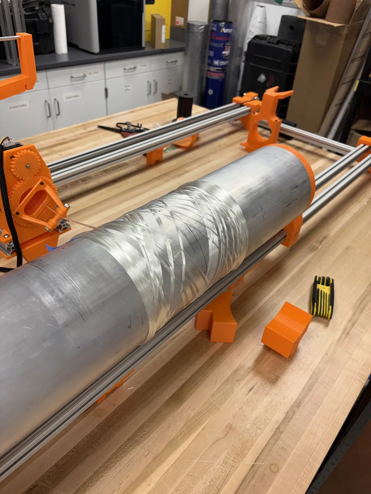
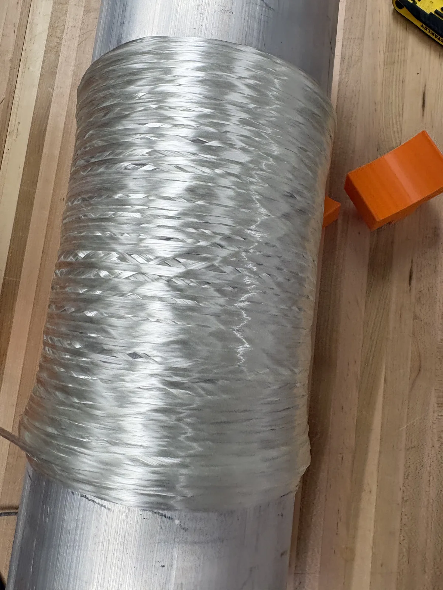

Filament Winder
Composite Body Tubes — Fiberglass and Carbon





My Role
Structures Lead (2026–present). Tuning and modifying the machine, and winding fiberglass and carbon flight tubes on it.
The team's filament winder wraps fiber onto an aluminum mandrel to make the composite body tubes for Duke Aero's rockets. It is built on an extruded aluminum frame with 3D-printed carriage and bearing blocks; the carriage traverses the mandrel as it rotates, laying the fiber down in a crossing helical pattern.
I am tuning and modifying the machine and winding fiberglass and carbon flight tubes on it. Stress-strain characterization of wound samples comes next.